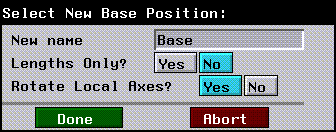
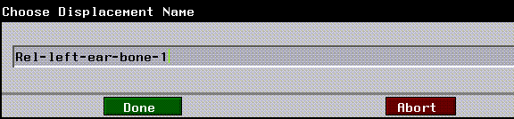
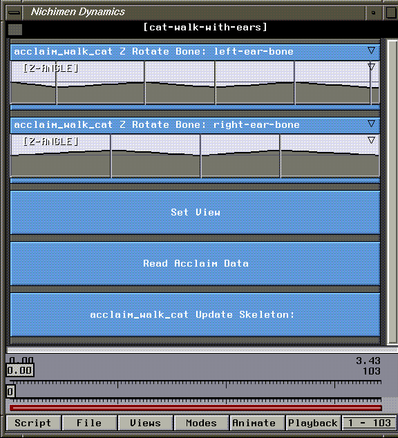

[N-World Contents] [Book Contents] [Prev] [Next] [Index]
Skinning Enhancements
In this chapter, you'll learn how to make additional modifications to a skeleton's skin to change how it interacts with an animated skeleton.
In this Chapter
You'll learn how to:
Soft Parts
After you attach a skin to a skeleton, you can make specific parts of the skin "soft."
If you used the Make Skin Parts command to divide the skin attached to a skeleton into individual parts, those parts are hard. Hard parts are named for the bone they are linked to, and have a somewhat "robotic" feel; such parts try to retain their shape when the bone they are attached to is moved.
Soft parts, on the other hand, are designed to deform naturally, and are most often used on the areas around hinge joints (such as a knee or elbow) on a moving model. The skin around a knee joint, for example, reacts differently when the lower leg is contracted than the skin around the shin. You need to make the area around the knee a soft part.
Making a Soft Part on a Knee Joint
This section shows how to make the skin around a knee joint soft. (Soft parts are also discussed in the Skeletal Animation System Reference Guide.)
When designing a soft part, it's important to include enough points around a joint to actually build the soft part. Around a knee, for example, it makes sense to have several "loops" of points around the joint, some above and some below the knee. Increasing the number of points on a soft part make it easier to make the joint "softer."
- Hint. If you are limited in the number of faces on your model, save some of that complexity for soft parts (if you need to create natural looking deformations around joint areas), as shown in Figure 5.1.
Figure 5.1 Left, poor candidate for soft knee part; right, added vertices make a better candidate
Before you Start
A word of warning: adding vertices around a joint for a better soft part after you've already saved a base state for the skin invalidates the base state.
Ideally, you should add complexity for soft parts before you first attach the skin. However, if you find you need to add vertices on the skin to create a better soft part, do the following:
1. (SHIFT-L) on Base.
- This returns the skeleton and the attached skin to their saved base positions.
2. (SHIFT-L) on the skeleton.
3. (CLICK-M) on Skin.
- A list of skins attached to the skeleton is displayed:
Figure 5.2 Selecting a skin to detach
4. (CLICK-L) on the skin you want to detach and (CLICK-L) on Do it.
- This detaches the skin from the skeleton. When you detach the skin, you're also given the option of deleting the default skin parts that were created when you first used the Skin command to attach the skin:
Figure 5.3 Optionally delete skin parts
5. (CLICK-L) on Yes.
- This deletes only the default skin parts that were created (not any other vertex parts you may have defined).
The skin is now detached from the skeleton, and any of the default skin parts created have been deleted.
Delete any Save Base States for the Skin
In addition, since the base state saved for the skin are no longer valid, you should delete any saved base state for the skeleton:
6. (CLICK-L) on the skin.
7. (CLICK-R) on Displace.
8. (CLICK-L) on Delete.
- Delete any saved base displacements that correspond to the skin with its previous number of vertices.
9. Make a new base state for the skin.
10. Reattach and test the skin.
You may repeat this process several times, although as mentioned above, it's a good idea to try to add the amount of complexity that you'll need around a joint before attaching the skin.
When to Use Soft Parts
When you bend a hinge joint without a soft part, you're likely to get a shearing effect when rotating the bone below the joint:
Figure 5.4 Left, original knee; right, knee bent with no soft part defined
Because there is no sense of "collision" between vertices on the skin, vertices attached to a bone always retain a fixed relationship to that bone.
You can create soft parts around such joints by selecting vertices above and below the joint and collecting them into a soft part that reacts based on the movement of a selected bone, as described in the following section.
Defining the Part
To build a soft part:
1. Collect the points on the skin around the selected joint.
- There are several methods for collecting vertices in N-Geometry; consult the N-Geometry Reference Guide for more details on collecting elements.
Figure 5.5 Select the points to include in a soft part
2. After you've completed the collection, (SHIFT-L) on the collection.
3. (CLICK-M) on Add to Part.
- In this step, you're going to remove the selected vertices from any of the other default skin parts to which they were originally assigned.
- Note. If you're using a model on which you've already defined other vertex parts (e.g., for animating displacements), make sure not to remove the points from those vertex parts.
- A list appears, displaying any parts to which the selected points belong:
Figure 5.6 Removing points in a soft part from other parts
4. With the points still selected, (SHIFT-L) on the Nichimen Geometry window.
5. (CLICK-L) on Add to Part.
6. (CLICK-L) on Make New Part.
- This option appears at the top of the menu. Later, if you're modifying the soft parts on a skeleton, you can remove the selected vertices from existing parts and reassign them to an existing soft part.
7. Give the soft part a name and (CLICK-L) on Make Part.
- Use a descriptive name, such as soft-left-knee.
Figure 5.7 Select the points to include in a soft part
8. (CLICK-L) on Make Part.
- The soft part has now been defined.
Associating the Soft Part with the Proper Bone
After you've defined the soft part, you need to associate it with the proper bone. This is typically the bone directly below the joint. For example, if you're building a soft part around a knee, select the tibia bone.
9. (CLICK-L) on Segments in the sensitivity element menu along the top of the 3D editor window.
10. (SHIFT-L) on the bone directly below the soft joint.
11. (CLICK-L) on Hard/Soft.
- The following dialog box appears:

Figure 5.8 Defining axes for a soft part
- This dialog box lets you specify which soft parts are affected by changes in the bone's X, Y, or Z orientation or Length.
- When you attached a skin and made default skin parts, remember that skin parts are made soft on the Y axis (the typical axis that follows a bone's length, and around which it twists) and length. If the bone twists or is scaled, the default associated skin part acts like a soft part.
- However, when the bone rotates on either of the other two axes, the skin acts like a hard part-it retains its volume and shape.
- Figure 5.8 shows the defaults for the left-tibia, which reflect the default assignments- hard in X and Z, soft in Y and length.
- Now that you've created a new soft part, you need to specify when the part should act like a soft part.
12. (CLICK-L) on the text edit box next to All Soft Parts.

Figure 5.9 Select the soft part to associate with the bone
13. (CLICK-L) on the soft part you specified in step 7 from the list that appears.
14. (CLICK-L) on Do It.
- The hard and soft parts dialog box is updated to reflect the soft part's new association with the tibia:
Figure 5.10 The part is now "soft" around all axes and in length
15. (CLICK-L) on Done.
The part is now soft around all axes and in length. This means that the joint will exhbit its soft characteristics no matter which axis you rotate the tibia around (or if you scale the tibia).
Testing the Soft Part
Now that the soft part has been associated with the tibia, rotate the tibia back and forth to make sure you've selected enough points to make a good part:
16. (SHIFT-L) on the tibia.
17. (CLICK-L) on XYZ Rotate.
- Rotate the leg back to check your joint:
Figure 5.11 Left, original knee; right, knee bent with added soft part
Skin Displacements
While the skin moves in response to the motion of the skeleton, you may want to create additional skin displacements, to emulate muscle expansion under the skin, facial expressions, or other topological changes to the skin when the skeleton moves to a given pose.
For example, when you rotate a forearm up in the x-plane, you may want to make the bicep for that arm gradually swell. You would define this type of "secondary motion" using a skin displacement.
- Note. Skin displacements are associated with the rotation of the selected bone in only one axis.
Making a Skin Displacement
1. Load the following sample object:
/usr/local/ngc/demo/objects/arm.geo
- The arm and skeleton should look like this:
Figure 5.12 Arm with skeleton
2. (CLICK-L) on Segments in the sensitivity element menu along the top of the 3D editor window.
3. (SHIFT-L) on the forearm.
4. (SHIFT-L) on XYZ Rotate and rotate the forearm up (as if the skeleton were flexing its bicep muscle).
- (CLICK-L) when the model is in the position where you'd want the maximum effect of the skin displacement:
Figure 5.13 Rotate the bone around one axis
- The next step is to modify the skin so that it matches the bone's new position:
5. Collect the segments around the middle of the bicep:
Figure 5.14 Collecting the segments around the bicep
6. (SHIFT-L) on the Nichimen Geometry window.
7. (CLICK-L) on the Scale command.
- Drag the mouse left to expand the bicep:
Figure 5.15 Modify the skin to the target position that should correspond to the bone's current rotation
- Note. If you change the number of points on the skin when defining the skin displacement, you invalidate its base state for the skin. If you add geometry to accommodate a skin displacement, you'll need to detach then reattach the skin if you want to automatically generate new skin parts.
8. (CLICK-L) on Segments in the sensitivity element menu along the top of the 3D editor window.
9. (SHIFT-L) on the forearm bone.
10. (CLICK-M) on Skin Displacement.
- As pointed out in the mouse documentation line, this step links the current shape of the skin (with the swelled bicep) with the current rotation value for the forearm bone in a single plane.
11. Enter the name of the Skin Displacement in the dialog box that appears.
Figure 5.16 Enter the name for the skin displacement
- You might give it a name like "Rotate Forearm X" or some other descriptive name. Including the rotation axis in the name of the displacement can be helpful when later trying to remember what a displacement does (e.g., when building a script in N-Dynamics).
12. (CLICK-L) on Done.
- The skin displacement is now associated with the selected bone's current rotation.
Testing a Skin Displacement
After you've defined your skin displacement, make sure that it's doing what you want:
13. (SHIFT-L) on the forearm bone.
14. (SHIFT-L) on XYZ Rotate and rotate the bone (as if the skeleton were flexing its bicep muscle).
- As you drag the mouse left and right, you should see the bicep swell accordingly:
Figure 5.17 The skin displacement in action
15. Save your work.
- (CLICK-L) on GeoMenus>File>Save.
Using Skin Displacements with Soft Parts
Skin displacements may also be of particular use when creating soft parts; in fact, using skin displacements in conjunction with soft parts (e.g., around a joint) lets you create the effect of a bone moving under the skin.
For example, if you animated the rotation of a forearm toward the bicep, you might define a soft part around the elbow, plus skin displacements for boththe flexing bicep and the slightly protruding elbow.
Using Extra Bones to Drive
Skin Displacements
This section describes a simple technique to drive secondary animations (those not based directly on motion capture data) by adding extra bones to a skeleton. A secondary animation can be something as simple as the blinking of an eye or the wiggling of an ear.
1. Load the following script:
/usr/local/ngc/demo/scripts/cat-walk
- The cat's skeleton and skin appear in the N-Geometry window:
Figure 5.18 Cat skin with skeleton
2. (CLICK-L) on the Animate button in the N-Dynamics window.
The cat walks toward the camera, but appears somewhat robotic; there are no facial expressions, no rough edges to make the animation more realistic.
In this script, we are applying a motion capture file to the skeleton, which in turn drives the cat's skin.
Remember that motion capture data drives bones on a skeleton by referencing their names. While this means we don't want to change the names of the bones on a skeleton, it also gives us the ability to do a couple of interesting things:
Suppose for example, that we want to make the ears of the cat wiggle independently while he walks. We can add a couple of extra bones to the skeleton, rotate those extra bones, and drive skin displacements based on the rotation of those bones.
Adding the Extra Bones
The first step is to add the extra bones to the skeleton.
3. Zoom the camera in on the head area of the skeleton.
Figure 5.19 Cat skin with skeleton
4. (CLICK-L) on GeoMenus>Visibility>acclaim_walk_cat to make only the skeleton visible.
Figure 5.20 Cat skeleton
5. (SHIFT-L) on the second joint from the top of the head (shown below), then (CLICK-L) on Add.
- This selects the joint to which you want to add the bone.
Figure 5.21 Select the joint shown
6. Move the cursor up and to the right, then (CLICK-L) to actually add the bone.

Figure 5.22 Adding the first bone
7. Repeat steps 5 and 6.
- You might want to draw the second bone in another direction, so you can easily select them:
Figure 5.23 Adding the second bone
Remember that even though we added two extra bones, all of the bones referenced by the motion capture file still have the same name. The extra bones were added, so they do not replace other bones on the skeleton. When the skeleton is animated, the newly attached bones move along, but since no motion data reference them by name, they aren't animated at all.
Resaving the Base State for the Skeleton
Because you've added extra joints to the skeleton, you need to resave the base state.
8. (SHIFT-L) on the skeleton, then (CLICK-M) on Base.
- The following dialog box appears:

Figure 5.24 Resaving the base state
- (CLICK-L) on Done. The old base state is renamed
"old-Base"; the skeleton with the extra bones is given the name Base.
9. (SHIFT-L) on the first bone you added, then (CLICK-L) on Rename.
Figure 5.25 Renaming a bone
10. (CLICK-M) on the text edit box, then enter a descriptive name for the new bone.
- Enter something like "left-ear-bone".
Figure 5.26 New bone name
- Repeat this process for the other bone you added.
You're now ready to create the skin displacements that you want to associate with bone rotations.
Creating the Skin Displacements
11. (SHIFT-L) on the left ear bone.
12. (CTRL-R) on XYZ Rotate.
- Enter a Z-rotation value of -45 in the dialog box that appears, then (CLICK-L) on Done.
Figure 5.27 Rotating the bone
- The bone rotates down 45 degrees:
Figure 5.28 The rotated bone
Now we need to create a skin displacement on the cat to associate with the extra bone. The skin displacement can be any type of skin deformation you want to animate over time-for example, if you want the left ear to prick up several times, you need to make a displacement for that secondary gesture.
13. (SHIFT-L) on the point at the tip of the cat's ear.
14. (ALT-M) on Axis Move, then (CLICK-L) on Y.
- You use the ALT key with N-Geometry commands to define an area of influence for an operation (called a magnet move). Magnet moves are described in more detail in the N-Geometry Tutorial Guide.
- N-Geometry goes into point-collect mode.
15. (CLICK-L) on the point where the ear and the jaw meet, then move the mouse up.
Figure 5.29 Defining the limits for the magnet move
- Stretch the ear until it looks something like this:
Figure 5.30 The stretched ear
16. (SHIFT-L) on the left ear bone, then (CLICK-M) on Skin Displacement.
- In the dialog box that appears, enter a name for the skin displacement:

Figure 5.31 Naming the skin displacement
- After specifying the name, (CLICK-L) on Done.
Repeat steps 11 through 16 for the other ear to create a similar skin displacement.
Animating the Skin Displacements in N-Dynamics
Now, you'll need to add some extra channels to rotate the extra bones over the course of the script. Because skin displacements are driven by the rotation of an associated bone (in this case, the "ear" bones we added earlier), we can drive different skin displacements with individual channels.
17. In N-Dynamics, move the cursor over the black title bar and press "s" twice to add two more channels.
- The Make Visible channels are added to the bottom of the script.
18. (CLICK-R) on the black title bar, then (CLICK-L) on Reorder Subchannels.
- Drag the two Make Visible channels to the top of the list.
19. Change the Make Visible channels to Z Rotate Bone channels.
- The Z Rotate Bone operation is under the Skeletal Animation operation class.
20. In each channel, select the acclaim_walk_cat skeleton and one of the two bones you added to the skeleton.
21. Now, add several cues to each of the curve channels under the Z Rotate Bone channels.
- The cues should alternate back and forth between values of 0 and the value of the cue specified in step 10 above.
22. Verify that the Read Acclaim Data is pointing to the correct skeleton and motion capture file.
- If you renamed the skeleton as described earlier, before you animate you need to specify which skeleton, .asf, and .amc files are to be used to animate:
Figure 5.32 Specifying the right skeleton and motion capture file
23. (CLICK-L) on the Animate button in N-Dynamics.
- Your script should look something like this when completed:

Figure 5.33 The completed script
- Hint. After animating the script, you may want to slide the cues back and forth so that the skin displacements correspond to other motions. For example, you may want the left ear to go up when the right foot falls-slide the cues to any position in the channel (even between frames)
Congratulations!
You've now learned some techniques for enhancing your skinned objects.
[N-World Contents] [Book Contents] [Prev] [Next] [Index]
 Another fine product from Nichimen documentation!
Another fine product from Nichimen documentation!
Copyright © 1996, Nichimen Graphics Corporation. All rights
reserved.